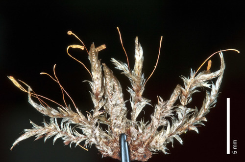

Ptychomniaceae
Ptychomnion Moss Family
The Ptychomniaceae is a family of robust pleurocarpous mosses found predominantly in temperate forests of the Southern Hemisphere. They are characteristically recognized by their strongly plicate (longitudinally pleated) leaves and often strongly ribbed or sulcate (grooved) capsules when dry. They typically grow on decaying wood, tree bases, or rocks.
Overview
Ptychomniaceae is a family of pleurocarpous mosses whose phylogenetic position is somewhat uncertain, sometimes placed near Hypnales or Hookeriales, or increasingly in its own order, Ptychomniales. The family is relatively small but conspicuous where it occurs, primarily in the cool, moist temperate forests of the Southern Hemisphere, particularly Australasia (New Zealand, Australia, Tasmania) and southern South America, with some extension into tropical mountains.
Members typically form robust, often glossy mats or wefts. The most striking features are the strongly folded or pleated leaves (plicate) and the distinctly ribbed or grooved capsules produced on long setae. They are common inhabitants of the forest floor, growing over decaying logs, tree bases, tree ferns, humus, and rocks.
Quick Facts
- Scientific Name: Ptychomniaceae M. Fleisch.
- Common Name: Ptychomnion Moss Family (no single widely accepted common name)
- Number of Genera: Approximately 4-6 (e.g., Ptychomnion, Cladomnion, Glyptothecium, Hampeella)
- Number of Species: Approximately 15-20
- Distribution: Primarily Southern Hemisphere temperate regions (esp. Australasia, southern S. America), some in tropical mountains.
- Evolutionary Group: Bryophytes - Mosses (Class: Bryopsida, Order: Ptychomniales / Hypnales / Hookeriales - placement varies)
Key Characteristics
Growth Form and Habit
Plants are pleurocarpous, typically medium-sized to large and robust, forming dense mats or loose wefts, often glossy yellowish-green to brownish-green. Stems are creeping, ascending, or somewhat erect, usually pinnately or irregularly branched.
Leaves
Leaves are typically crowded, erect-spreading to spreading, sometimes homomallous (pointing generally in one direction). Leaf shape is usually ovate to ovate-lanceolate, typically tapering to an acuminate (pointed) apex. The most characteristic feature is that the leaves are strongly plicate (having several distinct longitudinal pleats or folds), which is often evident even when moist but especially pronounced when dry. Margins are usually serrated or toothed, particularly in the upper part. The costa (midrib) is variable: in the main genus Ptychomnion, it is single and relatively strong but ends well below the apex; in other genera like Cladomnion, it may be short and double or absent. Leaf cells are typically linear and smooth, often with thick walls. Alar cells at the basal corners are usually differentiated, forming distinct groups of quadrate or short-rectangular cells, which can be yellowish or brownish.
Sporophyte (Capsule)
Sporophytes arise laterally from stems or branches. The seta (stalk) is long, usually smooth, and often reddish. The capsule is typically inclined to horizontal, ovoid to cylindrical, and symmetric or slightly curved (arcuate). A highly distinctive feature is that the capsule wall becomes strongly ribbed or sulcate (longitudinally grooved) when dry and empty. The operculum (lid) is usually conical or rostrate (beaked).
The peristome is double and well-developed, generally of the Hypnoid type (though sometimes described as Bryoid). The 16 outer exostome teeth are lanceolate, yellowish to brownish, usually cross-striate below and papillose above. The inner endostome consists of a high basal membrane, well-developed, keeled segments (often perforated), and typically well-developed cilia.
Habitat
Common inhabitants of moist temperate forests, particularly in the Southern Hemisphere. They grow on various substrates including decaying wood (logs, stumps), the bases of trees (especially tree ferns), humus-rich soil on the forest floor, and shaded rock surfaces.
Field Identification
Identifying Ptychomniaceae often relies on the distinctive leaf texture and capsule features:
Primary Identification Features
- Strongly Plicate Leaves: Leaves have distinct longitudinal folds or pleats, visible even when moist.
- Strongly Ribbed/Sulcate Capsule (when dry): The dry capsule wall has prominent grooves (requires fertile plants).
- Robust Pleurocarpous Habit: Forming often large, glossy mats or wefts.
- Habitat/Distribution: Characteristic of moist Southern Hemisphere temperate forests (on wood, rocks, humus).
Secondary Identification Features
- Linear Leaf Cells: Cells elongated and typically smooth (requires magnification).
- Differentiated Alar Cells: Groups of quadrate/rectangular cells at leaf base corners.
- Costa Variable: Single and short (Ptychomnion) or short/double/absent (Cladomnion).
- Inclined/Horizontal Capsule on Long Seta: Typical sporophyte posture.
Seasonal Identification Tips
- Year-Round Gametophytes: The robust, plicate plants are visible year-round.
- Sporophytes Common: Capsules are frequently produced; the ribbed texture is best seen on dry, empty capsules which may persist.
Common Confusion Points
- Brachytheciaceae: Many species are also robust pleurocarps with plicate leaves and sometimes ribbed capsules (e.g., Homalothecium, some Brachythecium). Distinction may require examining costa length (often longer in Brachytheciaceae), alar cell details, peristome structure, or specific branching patterns.
- Lembophyllaceae: Another Southern Hemisphere family of robust pleurocarps, but leaves are often more concave than strongly plicate, and capsules are typically smooth.
- Hypnaceae / Sematophyllaceae: Generally lack strongly plicate leaves and strongly ribbed capsules.
- Neckera / other complanate mosses: Have flattened shoots and often undulate leaves, but lack the strong longitudinal plications and typically have different costa/cell structure.
Field Guide Quick Reference
Look For:
- Robust pleurocarpous mats/wefts
- Leaves strongly plicate (longitudinal folds)
- Capsule (dry) strongly ribbed/grooved
- Habitat: Moist forests (logs, rocks, bases)
- Distribution: Primarily Southern Hemisphere
Key Variations:
- Genera Ptychomnion, Cladomnion etc.
- Costa single & short or short/double/absent
- Leaf cells linear, smooth
- Capsule inclined/horizontal
Notable Examples
Ptychomnion is the most well-known genus in the family.

Ptychomnion aciculare
Pipe-cleaner Moss
A very common and characteristic species in temperate forests of New Zealand, Australia, Tasmania, and southern South America. It forms robust, often extensive, yellowish-green to golden-brown mats on logs, tree bases, rocks, and forest floor. The leaves are strongly plicate and somewhat secund, with a single costa ending below the apex. The inclined to horizontal capsules become strongly ribbed when dry.

Cladomnion ericoides
(No common name widely used)
Found in similar regions as Ptychomnion. This genus differs notably in lacking a distinct single costa (costa absent or very short and double). Plants often form intricate wefts. Leaves are typically plicate, ovate-lanceolate, with differentiated alar cells. Sporophytes have ribbed capsules typical of the family.
Phylogeny and Classification
The phylogenetic placement of Ptychomniaceae remains somewhat uncertain within the Bryopsida. Historically, it was often associated with the Hypnales due to its pleurocarpous habit and Hypnoid peristome. However, its combination of features (strong plication, ribbed capsule, specific alar cells, Southern Hemisphere distribution) distinguishes it from core Hypnales families.
Some classifications place it near the Hookeriales or Lembophyllales, other orders rich in Southern Hemisphere pleurocarps. Increasingly, based on molecular data suggesting a relatively isolated position, it is often recognized in its own distinct order, Ptychomniales. This highlights its unique evolutionary trajectory among pleurocarpous mosses.
Position in Plant Phylogeny
- Kingdom: Plantae
- Division: Bryophyta (Mosses)
- Class: Bryopsida
- Order: Ptychomniales (or Hypnales / Hookeriales - placement varies)
- Family: Ptychomniaceae
Evolutionary Significance
The Ptychomniaceae family is significant for:
- Gondwanan Biogeography: Representing a lineage with strong ties to the landmasses of the former Gondwana supercontinent.
- Morphological Specialization: The combination of strong leaf plication and ribbed capsules represents a distinct morphological syndrome within pleurocarpous mosses.
- Phylogenetic Placement: Its uncertain position highlights the ongoing efforts to resolve the deep evolutionary relationships among major pleurocarpous moss lineages.
- Ecological Role: Being conspicuous components of the bryophyte flora in Southern Hemisphere temperate rainforests, contributing to ecosystem structure and function.